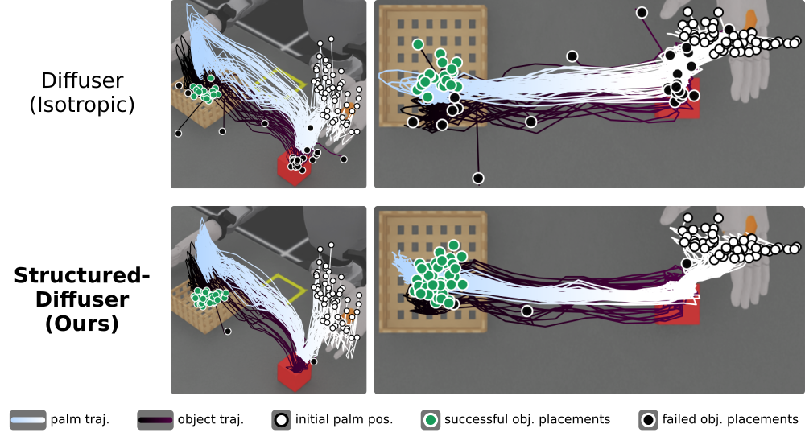
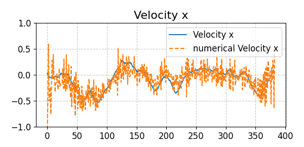
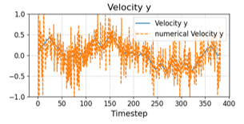
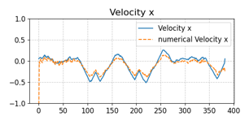
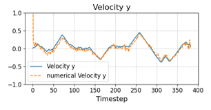
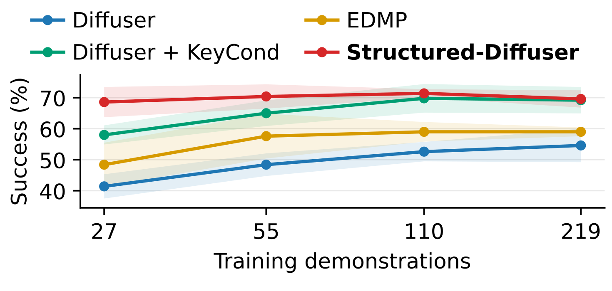

Our pipeline takes task goal and initial conditions as input. The upper level produces Y and C for the sparse key constraints C · τ = Y , using task-specific learned predictors, model-based components, and/or simple rules. (e.g., if the constraints are simple sparse waypoints, Y is a stack of key states and C is a selection matrix, which corresponds to designation of timings for the key states.) With (Y, C), we construct a Gaussian prior by conditioning a GP over trajectories, yielding (ξ, K). The lower level then generates the full trajectory by reverse diffusion from N (ξ, K).
We propose a novel hierarchical diffusion planner that embeds task and motion structure directly in the noise model. Unlike standard diffusion-based planners that use zero-mean, isotropic Gaussian noise, we employ a family of task-conditioned structured Gaussians whose means and covariances are derived from Gaussian Process Motion Planning (GPMP): sparse, task-centric key states or their associated timings (or both) are treated as noisy observations to produce a prior instance. We first generalize the standard diffusion process to biased, non-isotropic corruption with closed-form forward and posterior expressions. Building on this, our hierarchy separates prior instantiation from trajectory denoising: the upper level instantiates a task-conditioned structured Gaussian (mean and covariance), and the lower level denoises the full trajectory under that fixed prior. Experiments on Maze2D goal-reaching and KUKA block stacking show improved success rates, smoother trajectories, and stronger task alignment compared to isotropic baselines. Ablation studies indicate that explicitly structuring the corruption process offers benefits beyond simply conditioning the neural network. Overall, our method concentrates probability mass of prior near feasible, smooth, and semantically meaningful trajectories while maintaining tractability.
The G1 humanoid grasps an object and places it inside a target box. The trajectory state consists of 7-DoF left-arm joint positions and a hand grasping fraction. The key-state stack Y contains the initial, grasp, and release configurations. We train an MLP-based inverse-kinematics (IK) predictor for the grasp and release joint configurations, and another MLP to predict their timings for constructing C. The dataset consists of 219 successful Finite State Machine-generated trajectories collected in Isaac Sim. Simulation evaluations randomize start-goal pairs for Maze2D, initial joint configurations and block layouts for KUKA, and object/box poses and initial arm configurations for G1.
Isotropic Gaussian prior spreads probability mass broadly, while our structured prior concentrates it around task-relevant trajectory regions.
Our method concentrates trajectories near the object during grasping and near the box during release, resulting in fewer failures. We attribute these gains to the structured prior, which concentrates probability mass around task-critical regions through soft GP conditioning.

We deploy the planner on a physical robot equipped with an Inspire hand. For quantitative evaluation, we test 16 designated object locations on a 4 × 4 grid. For qualitative evaluations, we use both hands to pick up various different objects placed randomly.
With the low-level diffuser trained entirely in simulation and the high-level keystate predictor fine-tuned on less than 20 hardware configurations, success rate (SR) of Structured-Diffuser is stably higher than Isotropic prior.
ISO: 3/16 SR
Ours: 8/16 SR
ISO: 10/16 SR
Ours: 15/16 SR
The task is to grasp and stack blocks with a 7-DoF KUKA arm. The Diffuser benchmark provides joint-position trajectories, per-block binary contact flags, and block-position trajectories. Since block positions are determined from kinematics and contact, we train the models only on joint trajectories and contact flags. The key-state stack Y contains the initial, grasp, and release joint configurations, while their corresponding indices define C. A lightweight upper-level diffusion model predicts the contact-flag trajectory, from which grasp and release timings are extracted to construct C. For Y , we use the grasp and release joint configurations from the reference trajectory for each evaluation scene. Thus only the timings are predicted in this task, and Diffuser + KeyCond receives the same Y. At test time, the grasp target is the currently grasped block if any, or otherwise the block nearest the initial end-effector position. The release target is the highest remaining block.
Our prior rapidly converges to joint trajectories that result in smooth end effector motion, passing through the pick and place goals.
Our method has more successful final block stacks and less arm jitter, verified by kinematic replay of the generated trajectories.
Each task specifies a start and goal state on a fixed maze. Key states are defined as evenly spaced temporal waypoints between them, so C is fixed by design because the waypoint timings are predetermined. The upper-level key-state predictor is a lightweight diffusion model trained to generate the waypoint set Y at the fixed timings C.
Our prior rapidly converges to smooth, goal-reaching trajectories.
Our method results in significantly straighter trajectories and fewer collisions.
Structured-Diffuser generates smooth trajectories more consistently. This behavior is encouraged by LTV-GP-based covariance, which encodes temporal dependencies across trajectory states.




We compare three planners against our model:Among all methods, Structured-Diffuser achieves the highest mean success rate on G1. With less training data, the gap widens: using 27 demonstrations, Structured-Diffuser retains 68.6% compared with 58.0% for KeyCond.
- The baseline Diffuser, which uses isotropic Gaussian noise and conditions only on task inputs such as initial and goal states.
- Diffuser + KeyCond. A hierarchical variant of Diffuser where the lower-level diffusion is conditioned on key states and their timings produced by the upper level, while still using isotropic Gaussian noise.
- EDMP. A single-level Diffuser guided at in- ference time by model-based costs.
